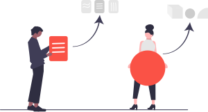
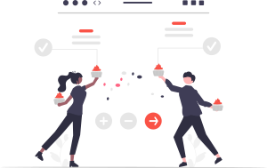
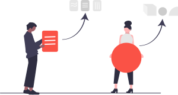
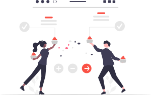

ID
ID
 English
ID
English
English
ID
English


Tingkatkan pengalaman rasa Anda dengan daya pikat lembut dari Sirup Gula Aren kami! Nikmati aroma molase dan toffee yang menawan, yang diekstrak dengan hati-hati dari nira aren premium. Taburkan di atas pancake, wafel, atau es krim, dan biarkan kelezatannya terungkap di setiap tetesnya. Karakteristiknya yang lembut akan memperhalus kurva rasa setelah dicampur dengan kopi.
Rasa manis alami dengan gula aren kami yang lezat. Gula Aren Bubuk lembut, berbutir halus dan diperkaya dengan mineral. Terbuat dari nira aren terbaik, harta karun emas ini memberikan esensi karamel yang kaya pada kreasi kuliner Anda. Gula ini sangat cocok untuk semua kebutuhan kue Anda, dan sangat bagus untuk kue, biskuit, topping, dan pai. Secara alami, produk ini bebas gluten dan dapat digunakan sebagai pengganti gula biasa.

Mengungkap seni dari manisan alam. Gula Aren berbentuk balok padat, berbentuk tabung, dan diperkaya dengan mineral. Dibuat dengan sempurna, permata aromatik ini memiliki tekstur yang halus dan rasa manis yang sedikit bersahaja. Gula ini secara alami bebas gluten, vegan, dan dapat digunakan sebagai pengganti gula biasa atau dilarutkan dalam minuman hangat untuk mendapatkan sentuhan keaslian yang luar biasa.
Konsultasi Pelanggan
Pertanyaan Pelanggan
Kontrak
Pengembangan Produk
Persetujuan Prototipe
Sertifikasi
Produksi Massal
Kontrol Kualitas
Pengiriman

 


